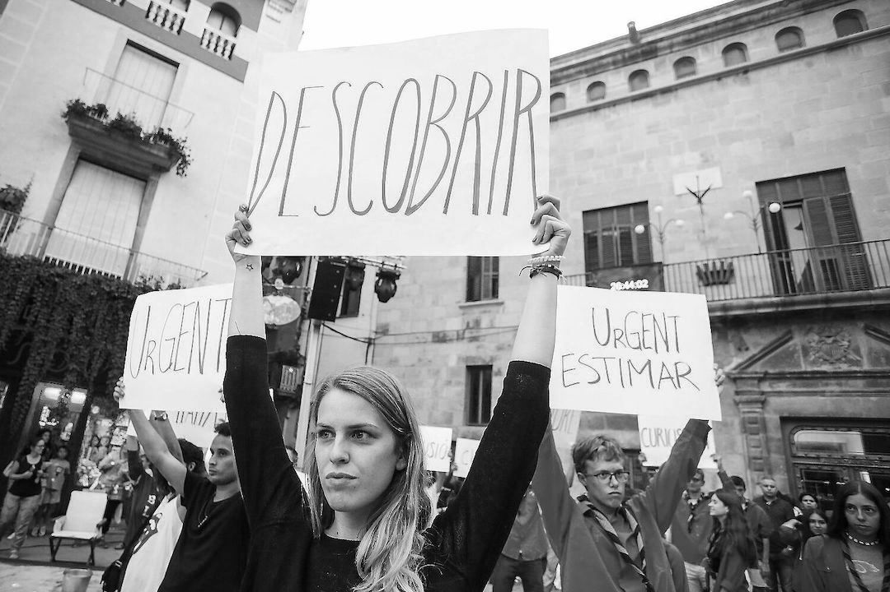
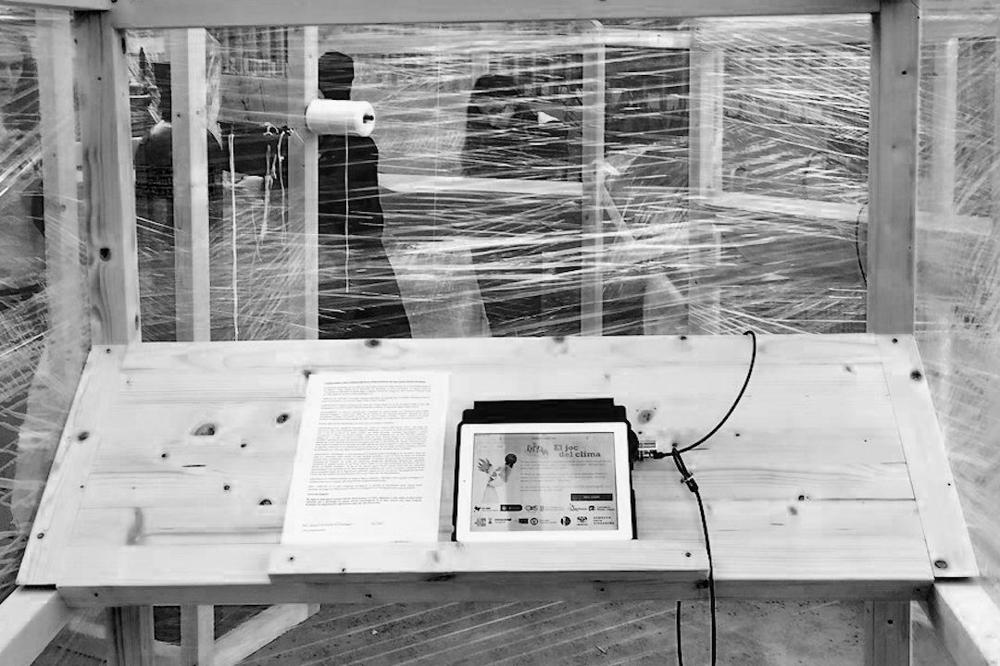
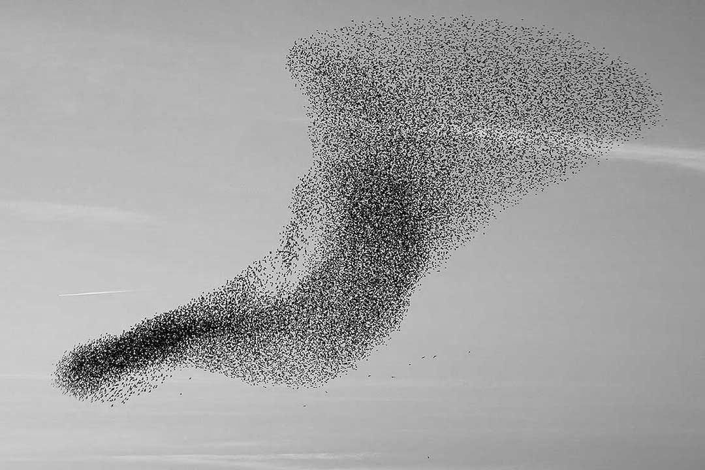

Research Interests
My research so far is focused on developing and applying computational algorithms to a large variety of topics. In particular, it has been concentrated on three main areas, the study of the decision-making process and human behaviour, the use of machine learning algorithms to study and unveil patterns in social phenomena, and the development of technological systems to perform participatory research and citizen science.
Currently, my multidisciplinary work bridge: complex social systems, human-computer interaction, artificial intelligence and citizen science, and my research interests line in:
I. Urban Systems and Social Justice. Designing fair machine learning algorithms to model urban systems from a data-driven approach, tackling issues such as algorithmic bias. Studying phenomenon like gentrification and related effects, such as displacement of residents and housing market impact; segregation and integration of vulnerable collectives; gender-based inequalities in urban contexts such as mobility patterns and labour market, or public health and sustainability in relation to urban ecosystems, collective behaviour, environmental health, and socio-economic factors.
II. Human Behaviour and Social Interactions. Researching to better understand human behaviours facing collective-risks, the effects of the ubiquitous inequalities among individuals and the sustainability of cooperation to increase social welfare. Characterizing interactions in social networks and participatory platforms, analysing phenomenons such as spreading of misinformation and fake news or the influence in public opinion of autonomous agents and social media bots.
III. Citizen Participation in Science. Designing participatory projects and platforms to incentive the involvement of citizens in science and other participatory actions. Following the principles of open research culture: transparency, openness and reproducibility in order to help the community to evaluate, critique, reuse and extend this research by means of open platforms, open datasets, open codes, and open publications.
Transvesally, I’m interested in the analysis and visualization of data for evidence-based decision-making and the relationship among science, technology, education and the arts.
January 1st, 2020
Research Paper

© MARTÍ E. BERENGUER | FIRATÀRREGA
Cooperation in hyper-social spaces is highly conditioned by the gender of the interacting individuals. This experiment, carried out at Fira de Tàrrega in 2017, measures the willingness of people to cooperate, pairing them to take part in the prisoner's dilemma game, outdoors and in the context of an artistic performance. This experiment, performed using participatory research and citizen science principles, shed light on how the other’s gender identity is a relevant factor in terms of cooperation and trust. In hyper-social scenarios, individuals show a pro-social behaviour, especially women, who exhibit high levels of cooperation, trust and ability to guess the others’ behaviour. The complete research paper «Gender-based pairings influence cooperative expectations and behaviours» is publicly available in Scientific Reports.
December 1st, 2018
Research Paper

© Julian Vicens | Climate Change Game
Citizen Social Lab is a digital platform used to perform behavioural experiments in the wild following the principles of citizen science. This platform collects data from the interaction between individuals who face a varied set of social dilemmas (public goods games, prisoner’s dilemma, trust game...). The platform is analysed with detail in the paper «Citizen Social Lab: A Digital Platform for Human Behaviour Experimentation Within a Citizen Science Framework» published in PlosOne with data of more than two thousand individuals participating in experiments in the public space.
September 27st, 2018
Conference

© Jan Collsiö | Dagen H
Talk at the Conference of Complex Systems (Thessaloniki, 2018) within the workshop «Complex systems for the most vulnerable». The talk,
«Addressing social justice and unveiling vulnerabilities through game theory and collective experiments», was focused on presenting the emergency of behaviours around important societal challenges such as climate change and its mitigation actions, public health and the current trend to reinforce care-at-home services, and the health impact on citizens due to strong inequalities in city air quality. All this phenomena was studied by means of a set of lab-in-the-field behavioural experiments coupled with citizen science practices.

© Unknow author | Starlings flow
Presentation of our work about social interactions in the mental health care community at the VII Jornada Complexitat: complex systems for theory to data science. The talk «A game theory approach to the mental health community» dig into the behavioural traits of role groups and the social capital in the mental health ecosystem.